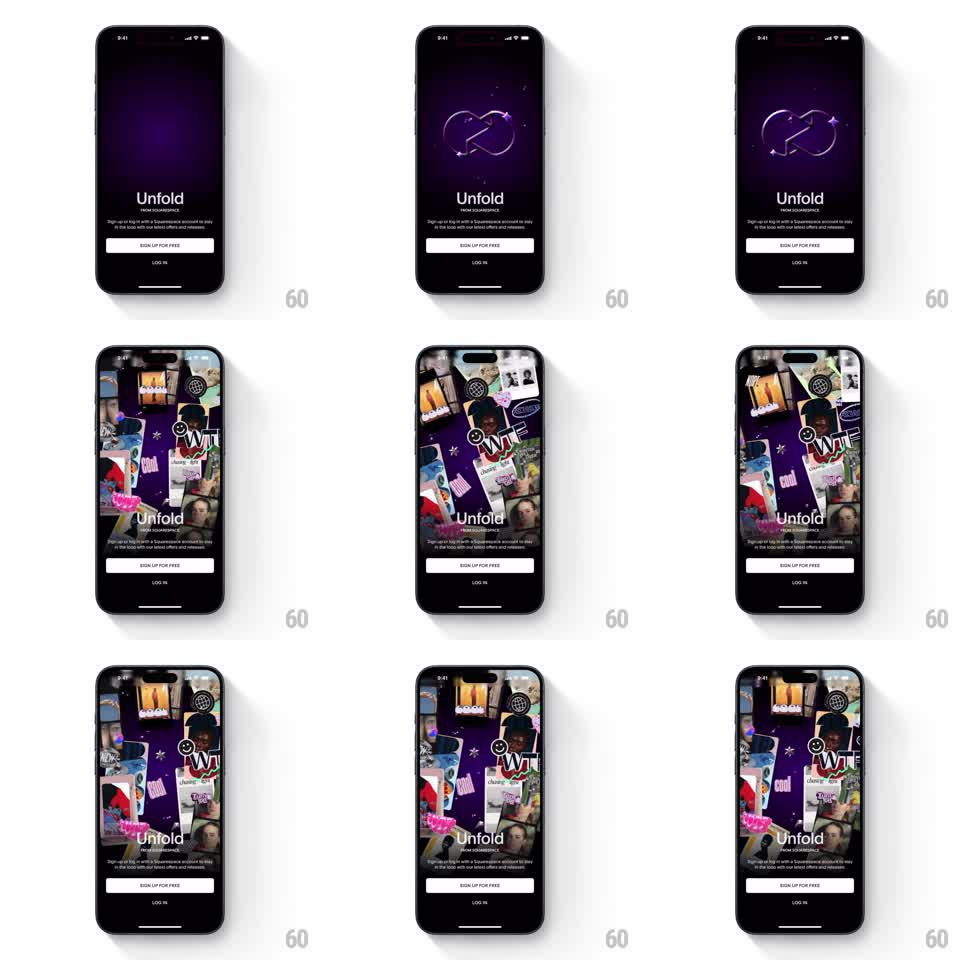

Media
Frame-by-frame

Rebuild this animation 1:1: Unfold's intro sequence - a metallic 3D logo mark rotates with sparkle particles over a dark purple gradient, then a dense collage of creative cards, stickers, and photos cascades in around the persistent signup block.

Rebuild this animation 1:1: Unfold's intro sequence - a metallic 3D logo mark rotates with sparkle particles over a dark purple gradient, then a dense collage of creative cards, stickers, and photos cascades in around the persistent signup block. ## Integration Integration: stack-agnostic spec - springs given as stiffness/damping, timed motions as duration + curve; map every value to your framework and animation library of choice. ## Scene Dark purple radial-gradient stage. Persistent bottom block: "Unfold" wordmark, "FROM SQUARESPACE", signup pitch line, white "SIGN UP FOR FREE" button, "LOG IN" text action. Phase 1: chrome 3D interlocking-loops logo at upper center with sparkle particles. Phase 2: a collage of ~20 tilted creative cards (photos, sticker graphics, smiley, "WTF" cutout letters) filling the upper two-thirds. ## Motion spec Pattern: two-phase brand intro, ~3.5s. - Phase 1 (1.2s): the 3D logo rotates slowly on Y (0 -> 40deg, ease-in-out) with specular highlights tracking the turn; 5-6 sparkle particles twinkle (scale 0 -> 1 -> 0, staggered 200ms) around it. - Phase 2: logo scales up and fades (300ms) as collage cards fly in from below-screen and off-edges, each landing at a fixed tilt (+-12deg) with a spring (~280/22), staggered 40ms, back rows slightly smaller for depth. - Collage settles into a slow ambient drift (translateY +-6px, 5s, ease-in-out, per-card phase offsets). - The signup block never moves through either phase. ## Calibration - Collage entrance is fast and confident; cards that float in gently read as a screensaver. - Ambient drift amplitude is small enough that card edges never cross the signup block. ## Reduced motion Skip phase 1 rotation: logo fades to the static fully-assembled collage (400ms); no drift. ## Don't miss - The transition is a crossfade with scale, not the logo flying off-screen - it must feel like the collage replaces the logo's space. - Card tilts are fixed per card; re-randomizing on each run breaks continuity.